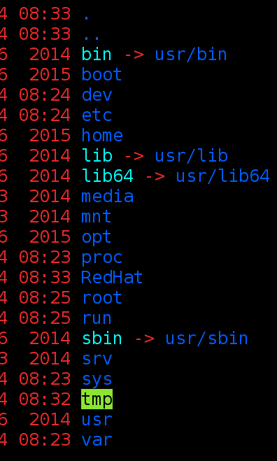

First things first, CSLUG stands for Cyber Security Linux Users Group, we are a club on campus that learns, observes, and gets hands-on with all things Networking, Cyber Security, and Linux.
CSLUG helps students and the public by putting together monthly events in which we have a company or business come out and do a presentation based on a topic of their choice relating to IT.
Check out our events page Here, for information regarding our next events. CSLUG meetings are free to the public, are once a month, and are very informative.
From the very skilled hacker, to the amature IT user, everyone will get something out of our meetings.